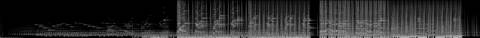
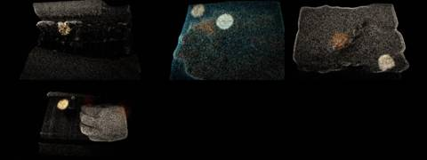

Afterlight / V Mosaic / AFL-15
V · Mosaic · AFL-15 of 22 · 1:20
Beckoning-02
The note that produced it
On this track: The texture of the first 49 seconds.
“I want each to be a mosaic assemblage of the tracks, never the whole track. Each a separate video experiment to see the samples, get the groove. Aim for 1–2 minutes per track.”
“A different attempt and technology for each Afterlight song / music video experiment”: readable as embers from their spectrograms, as Gaussian splats of places.
What was made
Gaussian-splat places: archive frames lifted into depth as 70,000 soft splats under a slow orbit. Each grain of sound flares a cluster, which lifts off as embers.
Five granular freezes · seventy single grains across the stereo field · a pulse from 0:37
What came back
The note on this version, which produced AFL-16 Magic Circle:
From one minute on.
Images made while working: contact sheets, check frames, spectrograms, the stills compared before and after a fix. Tap one to see it full size.





No separate critic agent was run on this cut. The critique came from the director, in the notes on either side of it.
On the cut before
The texture of the first 49 seconds.
On this cut
From one minute on.
Sample map
Every sound placed in the 1:20 study, 77 events by layer, coloured by the track it was cut from. The bars under the map are the whole source tracks; the lit spans are the parts actually used (approximate: stretched and frozen samples are counted by where they start).
The recipe
The function that composed this study, exactly as it ran.
def beckon():
"""only the first 49 s: the rising tones as grains, scattered across the stereo field, with one soft pulse from the end of that stretch"""
n = 'beckon'; m = Mix(80)
for i, (a, b, at, g) in enumerate([(2, 8, 0, 0.6), (14, 20, 8, 0.5), (24, 30, 18, 0.55), (31, 36, 30, 0.5), (8, 14, 44, 0.5)]):
fz = freeze(cut(n, a, b), 18, grain=0.12 + 0.05 * i, dens=36)
env = np.minimum(np.linspace(0, 1, len(fz)) * 3, 1) * np.minimum(np.linspace(1, 0, len(fz)) * 3, 1)
m.put('grains', fz * env[:, None], at, g, n, a, 'grain')
# splats: single short grains (80-250 ms) thrown across the field at irregular times
r = np.random.default_rng(3)
for k in range(70):
a = r.uniform(1, 47); L = r.uniform(0.08, 0.25); at = r.uniform(4, 74)
x = cut(n, a, a + L, 0.01, 0.05); p = r.uniform(-1, 1); x = x * np.array([np.sqrt(0.5 * (1 - p)), np.sqrt(0.5 * (1 + p))]) * 1.4
m.put('splat', reverb(x, r.uniform(2, 7), 3000, 0.01, 0.6), at, 0.9, n, round(a, 2), 'splat')
P = period(n, 37.59, 95.0, 8); L0 = snap(n, 37.59)
pulse = lp(loop(n, L0, P, 6), 1800); pulse *= np.minimum(np.linspace(0, 1, len(pulse)) * 2, 1)[:, None] * np.minimum(np.linspace(1, 0, len(pulse)) * 3, 1)[:, None]
m.put('pulse', pulse, 30, 0.8, n, L0, 'pulse')
m.put('ember', ember(cut(n, 44, 49), 20, 0.6), 62, 1.0, n, 44, 'tail')
return mThe picture technique
class Splats:
"""places from the archive lifted into depth as soft Gaussian splats; each grain of sound flares a handful of them and lets them go"""
def __init__(s, ctx, cats=('han', 'sea', 'des', 'sno'), seed=3, N=70000):
s.c = ctx; s.ids = footage(cats, 6, seed); s.N = N; s.places = [s.lift(i, k) for k, i in enumerate(s.ids)]
s.emb = Embers(20000, 5); s.splats = sorted([e for e in ctx.events if e['tag'] in ('splat', 'grain')], key=lambda e: e['t']); s.si = 0
s.flare = np.zeros(N, np.float32); s.period = max(12.0, ctx.dur / len(s.places))
def lift(s, cid, seed):
f = clip_frames(cid, 320, 240, 12, 4)[6].astype(np.float32); L = f @ np.array([0.3, 0.59, 0.11], np.float32)
depth = gaussian_filter(1 - L, 6) * 0.6 + np.linspace(1, 0, 240)[:, None] * 0.6 # dark and high = far
r = np.random.default_rng(seed); p = (gaussian_filter(np.abs(np.gradient(L)[0]) + np.abs(np.gradient(L)[1]), 1) * 0.5 + 0.05 + L * 0.5).ravel(); p /= p.sum()
idx = r.choice(240 * 320, s.N, p=p); y, x = np.divmod(idx, 320)
return dict(X=(x / 320 - 0.5) * 4 * 260, Y=(y / 240 - 0.5) * 3 * 260, Z=depth[y, x] * 900, C=f[y, x], R=r.random(s.N), J=r.standard_normal((s.N, 3)))
def render(s, P, t, a, wgt):
yaw = 0.25 * math.sin(t * 0.11) + 0.15 * math.sin(t * 0.05); dist = 1050 - 180 * math.sin(t * 0.07)
X = P['X'] + P['J'][:, 0] * 40 * (1 - a); Y = P['Y'] + P['J'][:, 1] * 40 * (1 - a) - (1 - a) * 200 * P['R'] * (wgt < 0)
Z = P['Z']; cx, sx = math.cos(yaw), math.sin(yaw)
x2 = X * cx + Z * sx; z2 = -X * sx + Z * cx + dist
f = 640 / math.tan(math.radians(25)); sxp = x2 * f / z2 + W / 2; syp = Y * f / z2 + H / 2
rad = 4200 / z2 * (1 + 1.2 * s.flare); br = a * (0.9 + 2.0 * s.flare)
img = np.zeros((H, W, 3), np.float32)
for lo, hi, sg in ((0, 2.2, 0.8), (2.2, 5, 2.2), (5, 1e9, 5.0)):
m = (rad >= lo) & (rad < hi) & (sxp >= 0) & (sxp < W - 1) & (syp >= 0) & (syp < H - 1)
if not m.any(): continue
ix = sxp[m].astype(int) + W * syp[m].astype(int); acc = np.zeros((H, W, 3), np.float32)
for ch in range(3): acc[..., ch] = np.bincount(ix, br[m] * P['C'][m, ch], W * H).reshape(H, W)
img += gaussian_filter(acc, (sg, sg, 0)) * (1.0 + sg * 0.9)
return img, sxp, syp
def frame(s, t, dt):
c = s.c; k = min(len(s.places) - 1, int(t / s.period)); u = (t - k * s.period) / s.period
while s.si < len(s.splats) and s.splats[s.si]['t'] <= t:
e = s.splats[s.si]; s.si += 1; r = np.random.default_rng(s.si)
P = s.places[k]; cx, cy = r.uniform(-500, 500), r.uniform(-300, 300)
near = np.nonzero((P['X'] - cx) ** 2 + (P['Y'] - cy) ** 2 < 70 ** 2)[0]; s.flare[near] = np.maximum(s.flare[near], 1.0)
s.flare *= 0.94
a = sm(0, 0.18, u) * (1 - sm(0.85, 1.0, u)) if len(s.places) > 1 else 1.0
img, sxp, syp = s.render(s.places[k], t, max(a, 0.02), 1)
if u > 0.85 and k + 1 < len(s.places):
img2, _, _ = s.render(s.places[k + 1], t, sm(0.85, 1.0, u), 1); img += img2
hot = np.nonzero(s.flare > 0.7)[0][:400]
if len(hot): s.emb.emit(sxp[hot], syp[hot], vx=20, vy=-40, T=0.8, life=2.5)
s.emb.step(t, dt, wind=(25, -10)); img = img * (0.75 + 0.35 * c.e('_mix', t)) + s.emb.draw(t, 0.8)
return img * np.array([1.0, 0.8, 0.6], np.float32)Files
The scripts that made this version, as plain text.
- compose.py254 linesthe nine mosaics: every cut, loop and freeze
- sampler.py154 linesloop, stretch, reverb, echo, freeze, tape stop
- mix.py85 linesthe 178-second set
- sound_design.py91 linesneedle drop, inhales, risers, sub, tape bus
- engines.py367 linesthe ten picture techniques
- vis_common.py106 linesshared embers, archive frames, the finish
- render.py41 linesrenders frames and encodes
- analyze.py21 linestempo and onsets of each source track
A film concept by Sosuke & Watson · CRASH LAB · PAELEO · CINEOSIS LAB